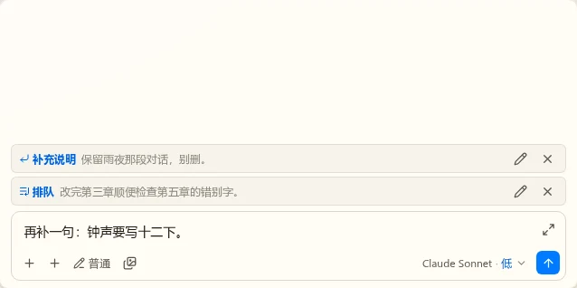
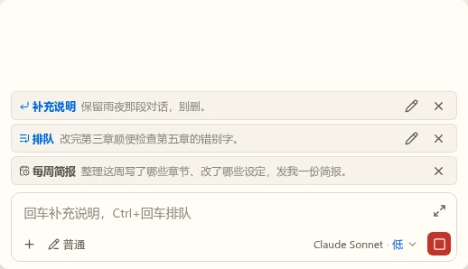
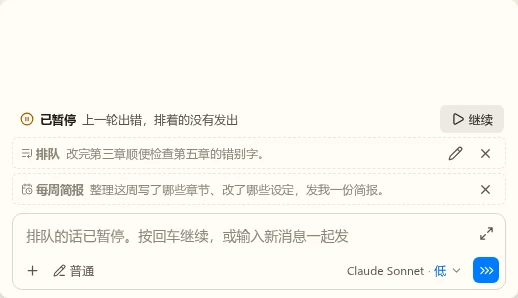
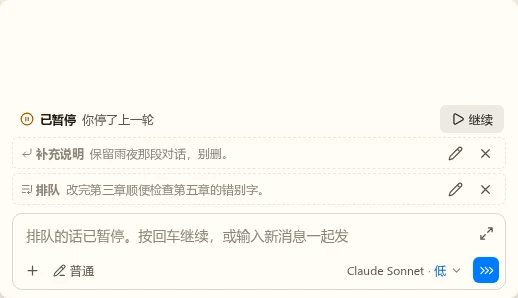
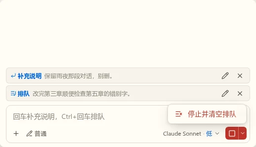
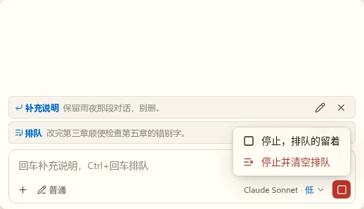

第 6 轮：排队区与停止
排队区这样画行不行？
推荐同意：照现在的排队区改，只加两样：别人排的话（例如日程）标来源、只能取消；留着时上面一行写“已暂停”、原因和“继续”，留着的行改成虚线框。输入框的发送键这时也是“继续”，两处是同一个动作。
现在

运行中，有日程排进来

上一轮出错之后

你停止之后

“停止并清空排队”放在哪？
推荐 A：点停止键就是最常用的“停止，排队的留着”，要清空才点旁边的箭头；B 每次停止都要多选一次。两种都只在排队里有你自己的话时出现。
A 停止键旁接下拉箭头

B 点停止先选

已定
- bot 的视图是 IM 式：左边是聊天与群聊，右边是聊天界面（开发者 2026-11-18）
- 注意力顺序：先看最新的对话与输入框；等你处理的事贴在输入框上方；日程默认收起；关着时只剩头像加未读气泡；不自动收起
- 对话本身用同一个组件；放在侧栏；多开放到最后，倾向做成侧栏视图能开多个（第 1 轮）
- 侧栏窄时用头像列加抽屉（第 2 轮）
- bot 与会话不混排：一个“消息”视图，顶上两个标签；bot 是 IM 会话列表，子会话与子 bot 进聊天头部的子代理入口；会话不按日分组（第 4 轮）
- 会话标签照会话面板，不按日分组，滚到底加载，bot 标签上带未读（第 5 轮）
- 记忆面板先不做；记忆文件在文件资源管理器里看（第 5 轮）
- 日程面板：每行等高，开关固定在右边，“确认”跟在“待你确认”后面（第 5 轮）